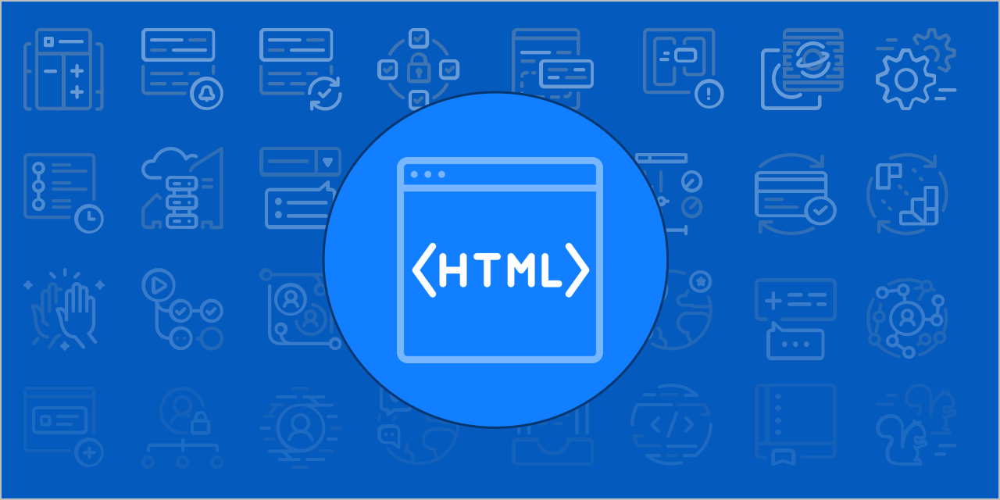
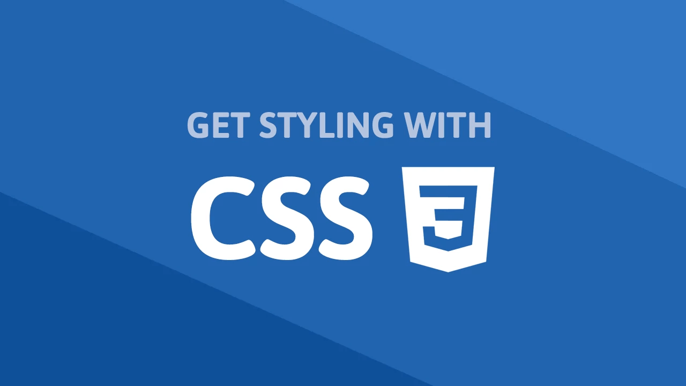
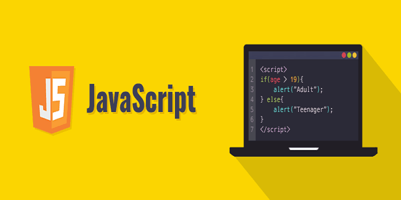
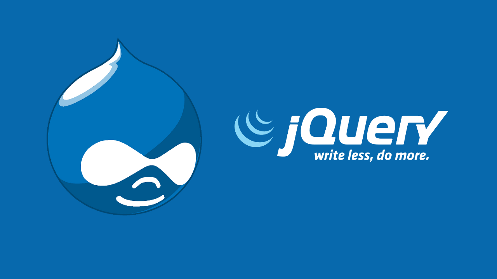
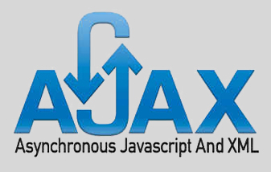
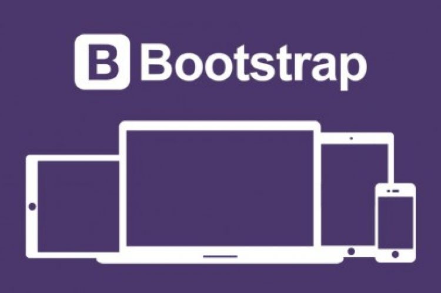
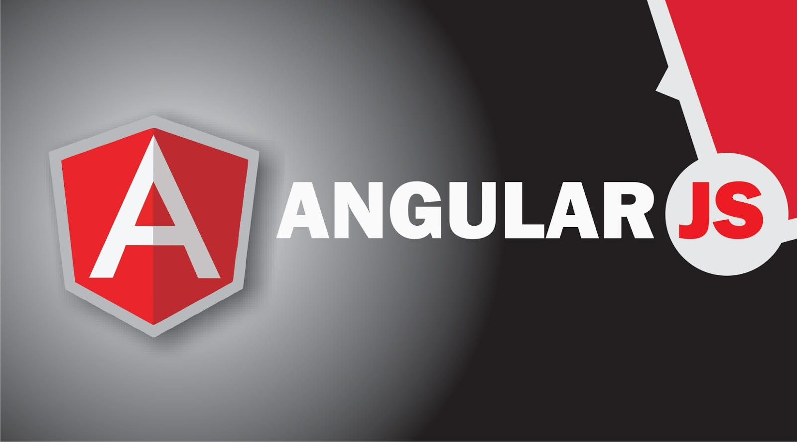
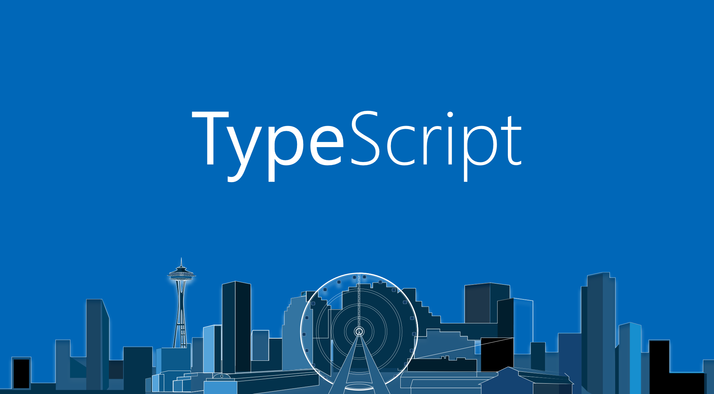

Since the 1970s, computer experts have created more than 700 different programming languages. Each language has a unique way of helping computers process huge amounts of information. Every coding language has different features and terms with some overlap. New coders shouldn’t be overwhelmed by the plethora of programming types though. There are only about a dozen programming languages that are commonly used. These include HTML, CSS, JavaScript, JQuery, AJAX, Bootstrap, AngularJS, TypeScript. Let’s look at some of the major coding languages about which beginners should know.
Online Coding Courses are the training programs that enables you to learn the necessary programming skills that employers are searching for. It helps you to focus on important aspects of programming and allows you to solve real-life problems for computer programming.
These Online coding certification courses are cheaper and faster to learn than college degree courses. These online programming courses will help you to enhance your logical thinking and problem-solving skills.
HTML

HTML
HTML stands for Hypertext Markup Language, and it is the most widely used language to write Web Pages.
Hypertext refers to the way in which Web pages (HTML documents) are linked together. Thus, the link available on a webpage is called Hypertext.
As its name suggests, HTML is a Markup Language which means you use HTML to simply "mark-up" a text document with tags that tell a Web browser how to structure it to display.
Originally, HTML was developed with the intent of defining the structure of documents like headings, paragraphs, lists, and so forth to facilitate the sharing of scientific information between researchers.
Now, HTML is being widely used to format web pages with the help of different tags available in HTML language.
CSS

CSS
Cascading Style Sheets, fondly referred to as CSS, is a simple design language intended to simplify the process of making web pages presentable.
CSS handles the look and feel part of a web page. Using CSS, you can control the color of the text, the style of fonts, the spacing between paragraphs, how columns are sized and laid out, what background images or colors are used, layout designs,variations in display for different devices and screen sizes as well as a variety of other effects.
CSS is easy to learn and understand but it provides powerful control over the presentation of an HTML document. Most commonly, CSS is combined with the markup languages HTML or XHTML.
JavaSript

JavaSript
JavaScript is a dynamic computer programming language. It is lightweight and most commonly used as a part of web pages, whose implementations allow client-side script to interact with the user and make dynamic pages. It is an interpreted programming language with object-oriented capabilities.
JavaScript was first known as LiveScript, but Netscape changed its name to JavaScript, possibly because of the excitement being generated by Java. JavaScript made its first appearance in Netscape 2.0 in 1995 with the name LiveScript. The general-purpose core of the language has been embedded in Netscape, Internet Explorer, and other web browsers.
JavaScript is a lightweight, interpreted programming language.
Designed for creating network-centric applications.
Complementary to and integrated with Java.
Complementary to and integrated with HTML.
Open and cross-platform
JQuery

JQuery
jQuery tutorial for beginners and professionals provides deep knowledge of jQuery technology. Our jQuery tutorial will help you to learn jQuery fundamentals, example, selectors, events, effects, traversing, CSS and attributes.
jQuery is a small and lightweight JavaScript library.
jQuery is cross-platform.
jQuery means "write less do more".
jQuery simplifies AJAX call and DOM manipulation.
AJAX

AJAX
AJAX stands for Asynchronous JavaScript and XML. AJAX is a new technique for creating better, faster, and more interactive web applications with the help of XML, HTML, CSS and Java Script.
Conventional web application transmit information to and from the sever using synchronous requests. This means you fill out a form, hit submit, and get directed to a new page with new information from the server.
With AJAX when submit is pressed, JavaScript will make a request to the server, interpret the results and update the current screen. In the purest sense, the user would never know that anything was even transmitted to the server.
Bootstrap

Bootstrap
Bootstrap is a free front-end framework for faster and easier web development
Bootstrap includes HTML and CSS based design templates for typography, forms, buttons, tables, navigation, modals, image carousels and many other, as well as optional JavaScript plugins.
Bootstrap also gives you the ability to easily create responsive designs
Angular JS

Angular JS
AngularJS is a structural framework for dynamic web applications. It lets you use HTML as your template language and lets you extend HTML's syntax to express your application components clearly and succinctly. Its data binding and dependency injection eliminate much of the code you currently have to write. And it all happens within the browser, making it an ideal partner with any server technology.
AngularJS is a efficient framework that can create Rich Internet Applications (RIA).
AngularJS provides developers an options to write client side applications using JavaScript in a clean Model View Controller (MVC) way.
Applications written in AngularJS are cross-browser compliant. AngularJS automatically handles JavaScript code suitable for each browser.
AngularJS is open source, completely free, and used by thousands of developers around the world. It is licensed under the Apache license version 2.0.
TypeScript

TypeScript
TypeScript is a strongly typed, object oriented, compiled language. It was designed by Anders Hejlsberg (designer of C#) at Microsoft. TypeScript is both a language and a set of tools. TypeScript is a typed superset of JavaScript compiled to JavaScript. In other words, TypeScript is JavaScript plus some additional features.